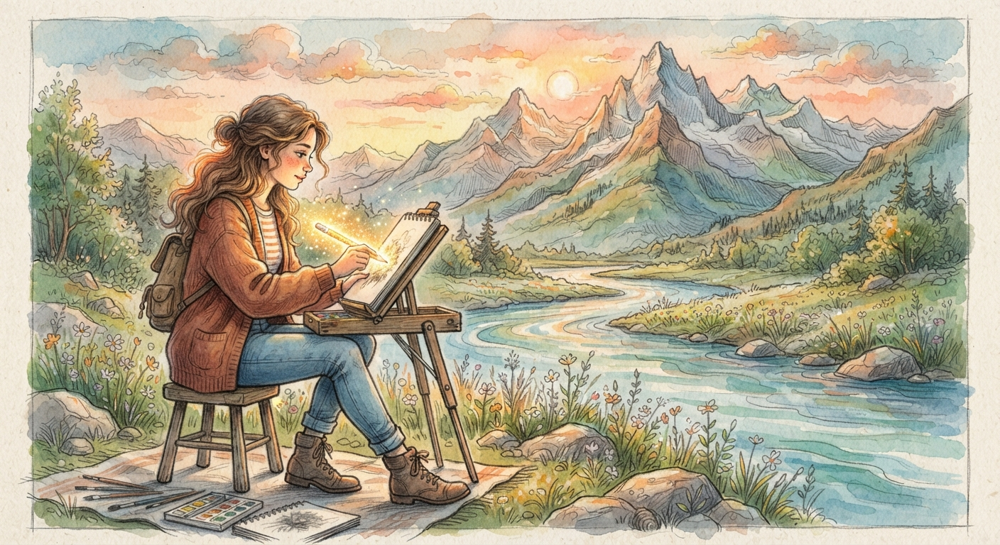
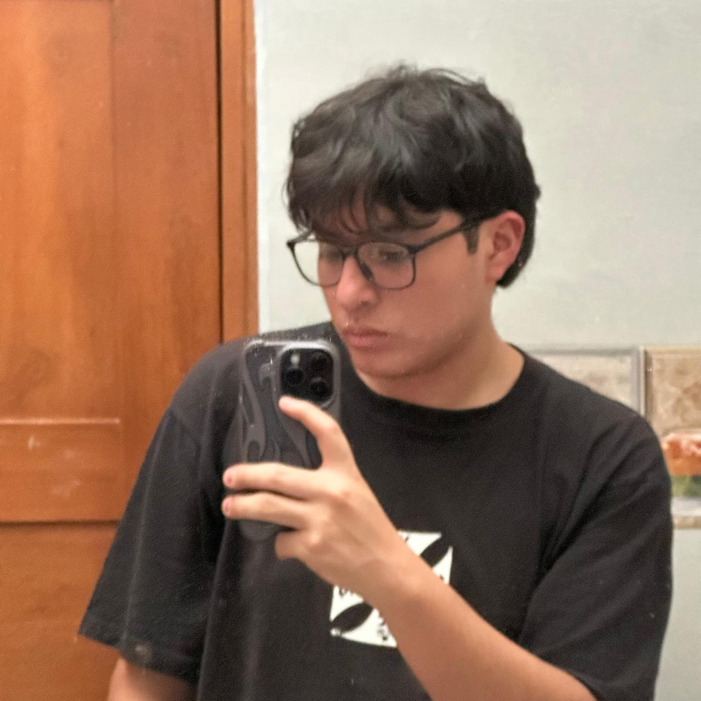

Trazos del Tomebamba

Videojuego independiente de aventura donde cada línea que dibuja el jugador se convierte en puentes, escudos y criaturas.
Técnica o herramienta: dibujo a lápiz y acuarela, diseño de juego.
ART DESIGN · INTEGRANTE
Animación 2D cuadro por cuadro y diseño de videojuegos

Soy Rafael Tenesaca, estudiante de Diseño Multimedia en la Universidad Politécnica Salesiana. Me gusta dar vida a los dibujos: animo cuadro por cuadro y diseño videojuegos donde dibujar es parte de la aventura.
Quiero diseñar contenidos donde el movimiento y el dibujo cuenten historias, aplicando principios de animación como el timing, la anticipación y el squash and stretch.

Videojuego independiente de aventura donde cada línea que dibuja el jugador se convierte en puentes, escudos y criaturas.
Técnica o herramienta: dibujo a lápiz y acuarela, diseño de juego.
Animación corta cuadro por cuadro de un gato negro en estilo silueta con ojos blancos, trabajada con masa, anticipación y follow-through.
Técnica o herramienta: Adobe Animate, 12 FPS, 1080x1080.
El audio ambiental es el tipo de música suave que imagino de fondo en mis animaciones y en los paisajes de mis videojuegos. El video presenta mis dos trabajos en secuencia, mostrando cómo el dibujo se convierte en movimiento. Ambos recursos resumen mi perfil: contar historias con ilustración, animación y sonido.
Un afiche digital que cambia cada vez que lo generas
Cómo usarlo: elige una paleta, pulsa "Generar composición" para crear una variación nueva y "Guardar PNG" para descargar tu afiche.
Formulario demostrativo: no guarda datos ni envía mensajes reales. Pruébalo solo con datos ficticios.